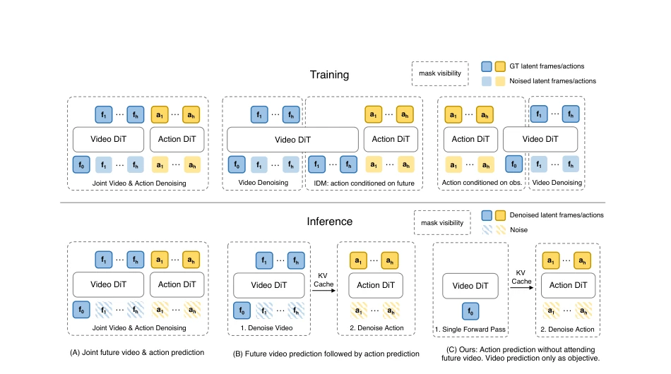
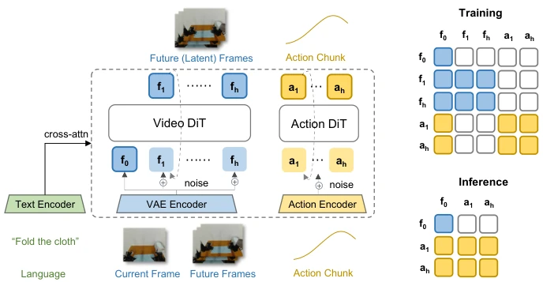
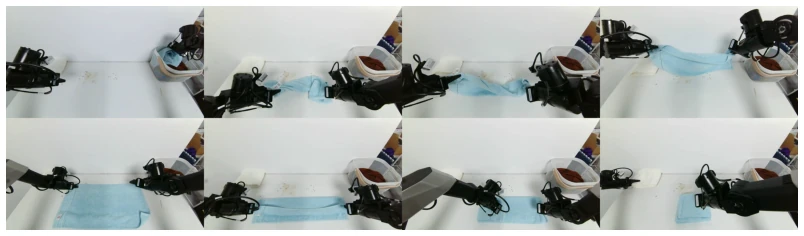
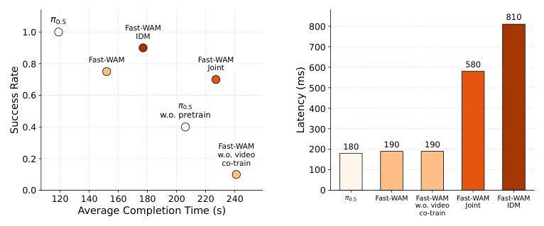

This paper acts as a vanguard of 'anti-involution', directly questioning whether the 'future imagination' of World Action Models (WAM) is an 'IQ tax'. The core logic of Fast-WAM is: during training, let it watch videos to learn physical laws; during inference, work directly based on memory (latent representation), stop dreaming. This operation is indeed fast, 190ms is 4 times faster than competitors, but the cost is giving up explicit future video generation. Although the authors claim this does not affect performance, upon reflection, this is actually betting that the representation capability of the video pre-trained model (Wan2.2) is strong enough to be fed directly to the action head. If the video backbone is not strong enough, this 'slacking' strategy might fail. However, it indeed proves that WAM's gain comes more from video supervision during training, rather than explicit generation during inference, which is an important de-mystification for subsequent research, but also implies that the future may require larger pre-training data to support this imagination-free architecture, after all, without future video as an intermediate variable, the model's explicit modeling capability for long-range dependencies may be limited.
Existing WAMs mostly follow the 'imagine-then-execute' paradigm, such as [3], [4], [5], etc., first generating future videos through iterative denoising, then predicting actions based on the generated videos. Although this design is intuitive, inference latency is huge, because video generation itself is a compute-intensive task. More critically, the academic community has vaguely believed that explicit future imagination is crucial for action performance, yet no one has strictly verified: whether WAM's strong performance is because it learned video prediction during training, or because it truly 'saw' the future during inference? This confusion leads to redundant model design, unable to be deployed in real-time control. This paper aims to decouple these two factors, answering whether WAM really needs test-time future imagination, or if video co-training objectives during training alone are sufficient, thereby providing a theoretical basis for efficient WAM design, avoiding blind stacking of inference overhead.
方法Method
Fast-WAM 采用 MoT（Mixture-of-Transformers）架构，基于 Wan2.2-5B 的 Video DiT 作为世界建模骨干。整体流程分为训练和推理两阶段。训练时，模型同时优化动作预测和视频预测的 Flow Matching 损失，视频分支负责学习物理动态，动作分支负责生成动作 chunk，两者通过共享注意力机制交互，但受结构化掩码约束，动作 token 不能直接访问未来视频 token，防止信息泄露。推理时，完全移除未来视频分支，仅保留当前帧的 clean latent tokens，通过 Video DiT 单前向传播提取世界表征，直接输入 Action DiT 生成动作。这种设计保留了训练时的视频监督信号以塑造高质量 latent 空间，但去除了推理时的视频生成开销，实现了单步前向的动作预测，兼具 VLA 的接口简单性和 WAM 的表征能力，通过共享注意力机制确保动作预测基于当前观测的深层语义理解。
Fast-WAM adopts a MoT (Mixture-of-Transformers) architecture, based on Wan2.2-5B's Video DiT as the world modeling backbone. The overall process is divided into training and inference two stages. During training, the model simultaneously optimizes Flow Matching loss for action prediction and video prediction; the video branch is responsible for learning physical dynamics, the action branch is responsible for generating action chunks, both interact through a shared attention mechanism, but are constrained by structured masking, action tokens cannot directly access future video tokens, preventing information leakage. During inference, the future video branch is completely removed, only clean latent tokens of the current frame are retained, world representation is extracted through Video DiT single forward propagation, directly input into Action DiT to generate actions. This design retains the video supervision signal during training to shape a high-quality latent space, but removes the video generation overhead during inference, achieving single-step forward action prediction, combining the simple interface of VLA and the representation capability of WAM, ensuring action prediction is based on deep semantic understanding of current observations through shared attention mechanism.

Figure 1: Three representative WAM paradigms. (A) Joint-modeling WAMs denoise future video and action tokens together. (B) Causal WAMs first generate future observations and then condition action prediction on the generated future representation. (C) Fast-WAM retains video co-training during training but removes explicit future generation at inference time, directly predicting actions from latent world representations in a single forward pass.

Figure 2: Fast-WAM architecture and the structured attention mask used to disentangle video co- training from action generation.
实验Experiments
在 RoboTwin 和 LIBERO 仿真基准上，Fast-WAM 无需具身预训练即达到 SOTA 水平，平均成功率超 91%。真实世界毛巾折叠任务中，Fast-WAM 成功率与完成时间表现优异，且推理延迟仅 190ms，远快于 Fast-WAM-IDM 的 810ms。消融实验显示，移除视频共训练目标（Fast-WAM w.o. video co-train）会导致性能大幅下跌（RoboTwin 从 91.8% 降至 83.8%），而移除测试时未来想象（Fast-WAM vs Joint/IDM）影响较小。这证实了视频预测的核心价值在于训练阶段的表征学习，而非推理阶段的显式生成。与 π0.5 等 VLA 基线相比，Fast-WAM 在无需预训练情况下仍具竞争力，展示了数据效率，证明了视频预训练对具身策略的迁移价值。
On RoboTwin and LIBERO simulation benchmarks, Fast-WAM reaches SOTA level without embodied pre-training, average success rate over 91%. In real-world towel folding tasks, Fast-WAM success rate and completion time performance are excellent, and inference latency is only 190ms, far faster than Fast-WAM-IDM's 810ms. Ablation experiments show that removing video co-training objectives (Fast-WAM w.o. video co-train) leads to significant performance drop (RoboTwin from 91.8% down to 83.8%), while removing test-time future imagination (Fast-WAM vs Joint/IDM) has less impact. This confirms that the core value of video prediction lies in representation learning during the training phase, rather than explicit generation during the inference phase. Compared with VLA baselines such as π0.5, Fast-WAM remains competitive without pre-training, demonstrating data efficiency, proving the transfer value of video pre-training for embodied policies.

Figure 3: Real-world towel-folding task on the Galaxea R1 Lite platform. Folding a deformable object requires long-horizon planning and precise closed-loop manipulation, making it a challenging benchmark for evaluating both task success and execution efficiency.

Figure 4: Real-world results on the long-horizon towel-folding task. The left panel plots success rate against average completion time, where upper-left is better. The right panel compares inference latency. Fast-WAM achieves strong real-world performance with substantially lower latency than imagine-then-execute variants, while removing video co-training degrades both success rate and completion time.